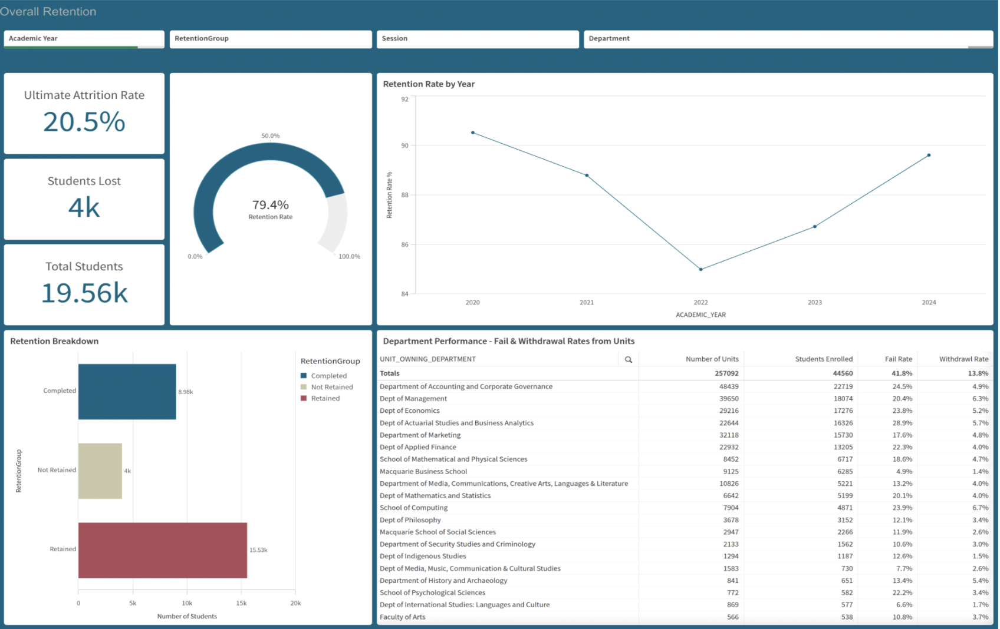
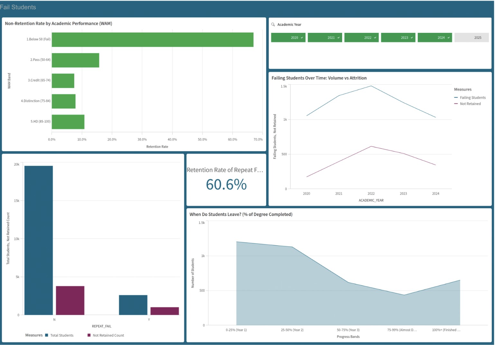
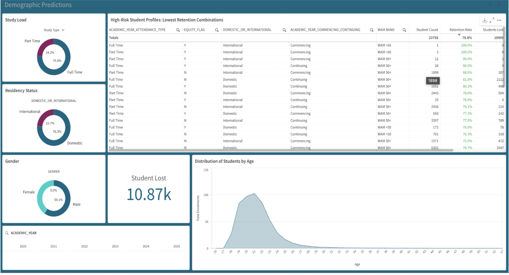
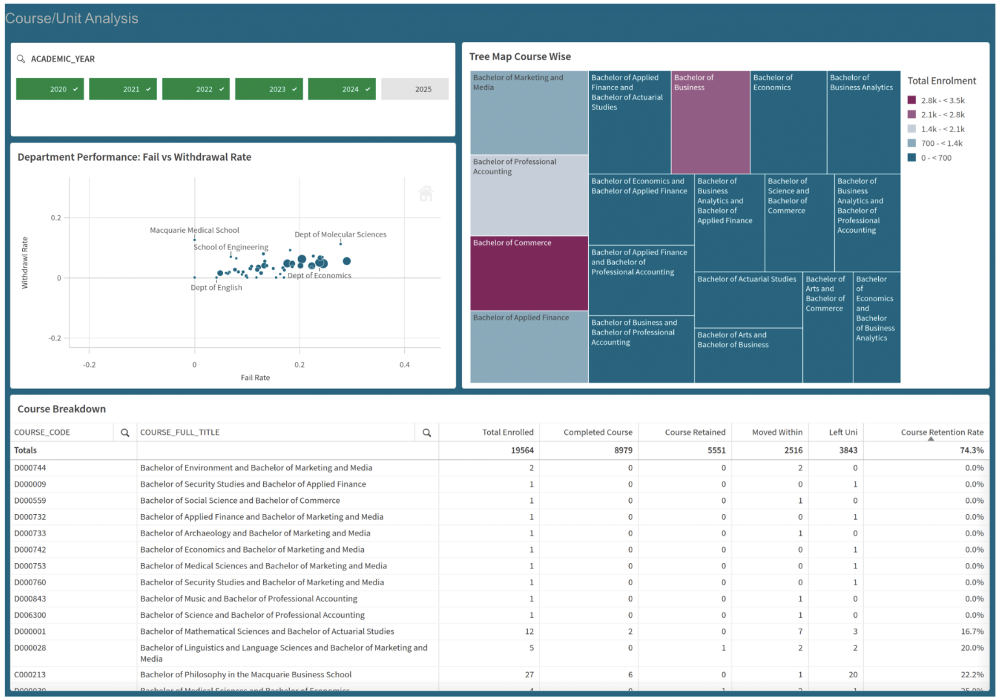

Predictive Analytics · Machine Learning · Dashboard
Student Retention
R · SQL · Qlik Sense · Power BI · Macquarie University, November 2025
← Back to Projects
Overview
Macquarie Business School (MQBS) was experiencing student attrition without a clear picture of who was leaving, when, and why. Around 20.5% of enrolled students (≈ 4,000 people) were leaving without completing their degrees — representing an estimated AUD $120 million in potential revenue loss over five years.
The goal was to move from retrospective observation to prediction — building a system that could identify at-risk students before they withdrew and surface evidence-based patterns across academic, demographic, and structural dimensions.
19.5K
Unique student records
Approach
1
Data Preparation
Merged Retention and Enrolment datasets (19,560 records, 2020–2024). Created derived variables: degree progress %, WAM bands, retention classification, repeat-fail flags. Excluded 2025 partial-year data.
2
Descriptive Analytics — Qlik Sense & Power BI Dashboards
Built 4 interactive dashboards: Overall Retention, Fail Students, Demographic Predictions, and Course/Unit Analysis — filterable by year, session, department, and student type.
3
K-Means Clustering (R)
Applied K-means (k=4, elbow method) on demographic and academic features. Mapped clusters to actual retention outcomes — Cluster 1 identified as high-risk (5,114 students, 60–70% retention vs. 79.4% average).
4
Logistic Regression (R)
Binary classifier (retained vs. not retained) with class weighting, threshold lowered to 0.4 to maximise recall. 85.5% accuracy, 90.1% recall, AUC 0.935. Top predictors: course completion %, WAM, repeat-fail status, study load.
Dashboards
Four dashboards were built to cover different dimensions of the retention problem — from institutional trends down to individual course and demographic risk profiles.

📊Add: Overall Retention dashboard
Overall Retention — 20.5% attrition KPI, retention-by-year trend, department table

📉Add: Fail Students dashboard
Fail Students — WAM bands vs. retention rate, repeat-fail analysis, attrition by year of study

👥Add: Demographic Predictions dashboard
Demographic Predictions — retention by citizenship, study mode, gender, equity status

📚Add: Course/Unit Analysis dashboard
Course/Unit Analysis — treemap by enrolment, fail vs. withdrawal rate scatter, course retention table
Key Findings
68% of withdrawals happen in Years 1–2The first 50% of degree progression is a critical persistence threshold. First failure is the pivotal event — students without timely support tend to withdraw shortly after.
WAM is the single strongest predictorStudents with WAM below 50 retained at ~67% vs. 80–88% for those who passed. Repeat-fail students retained at only 60.6% vs. 85% for non-repeat-fail peers.
Domestic part-time students are the highest-risk groupRetention ≈ 59–61% vs. 84–85% for international full-time students. Balancing employment, study, and family creates compounding disengagement.
Course-level structural barriers are independent risk factorsBachelor of Commerce retained at ~45% vs. Marketing at 60%+. Programs with unclear sequencing or heavy assessment loads had systematically worse outcomes regardless of student characteristics.
← Back to all projects